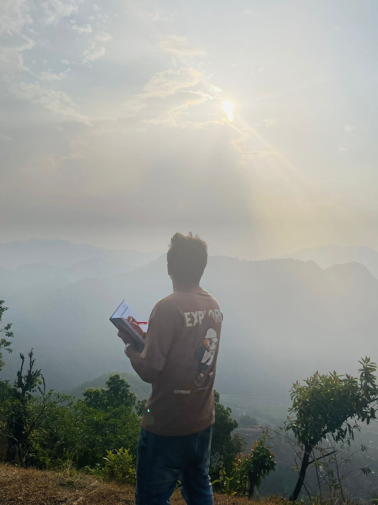
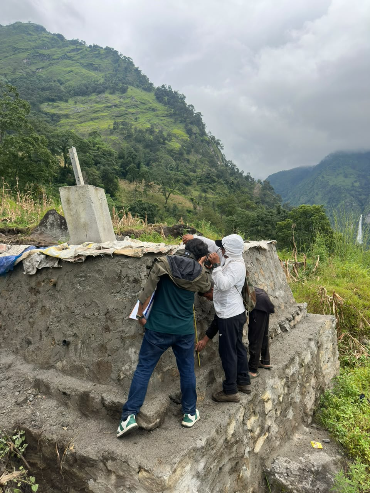
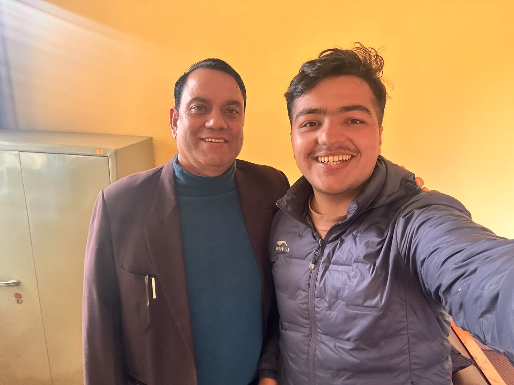
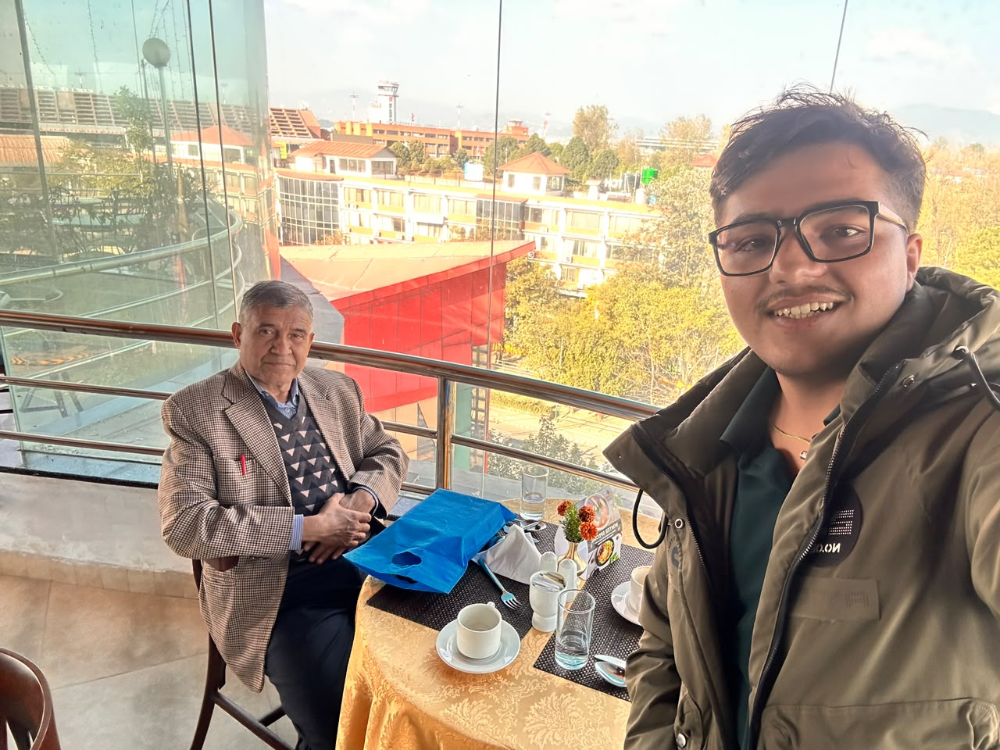
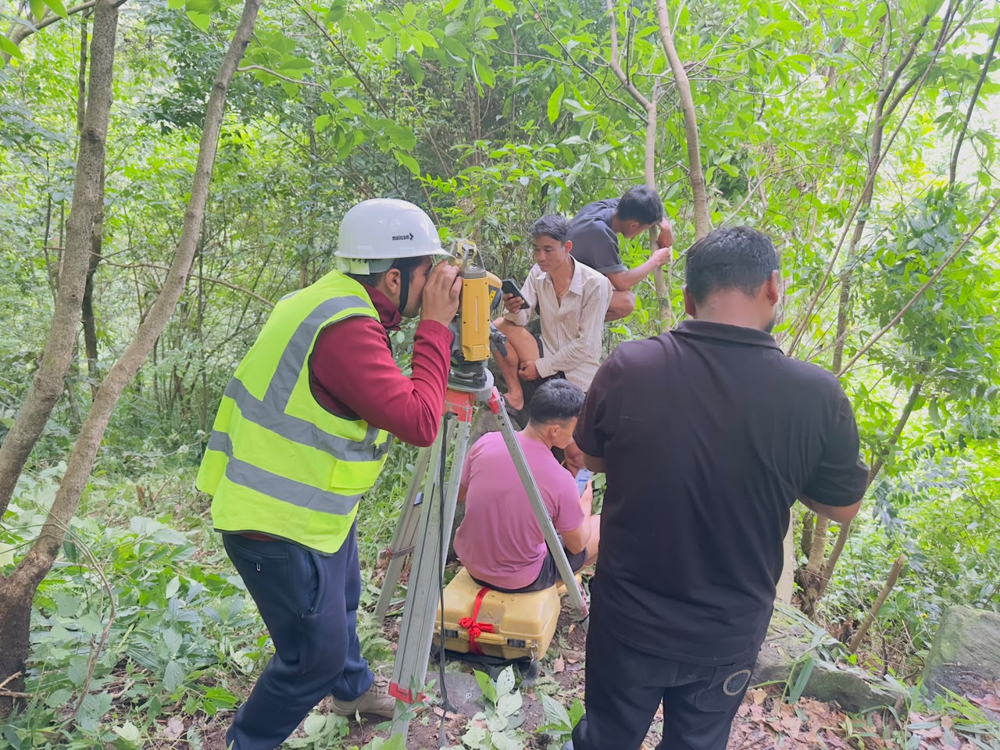
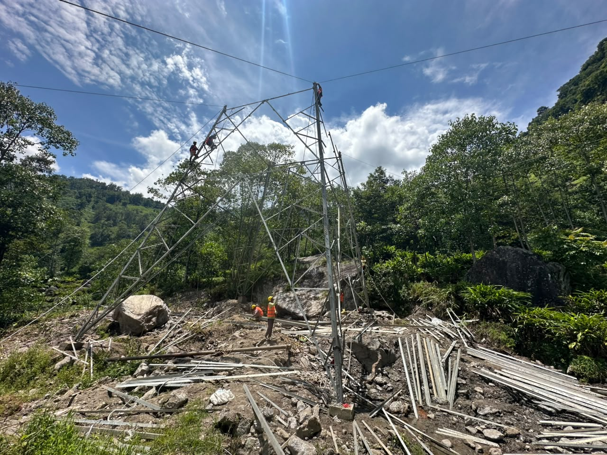
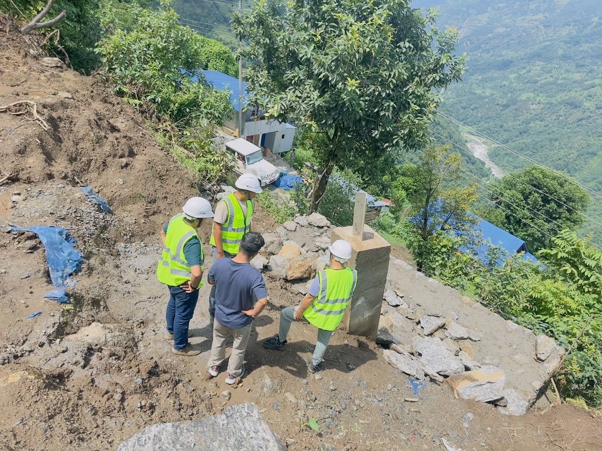
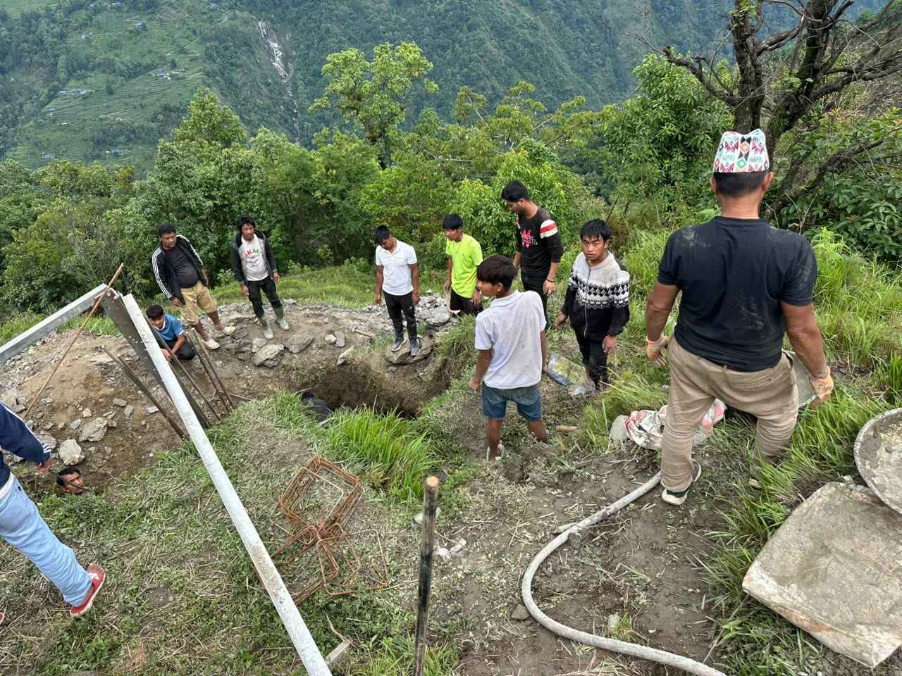
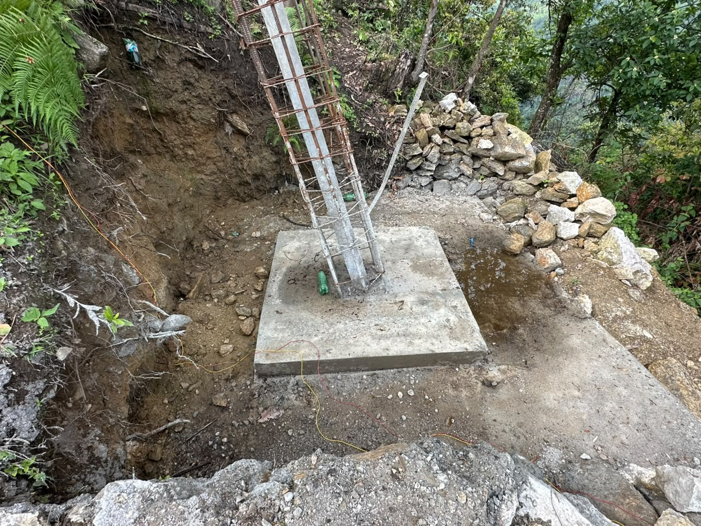
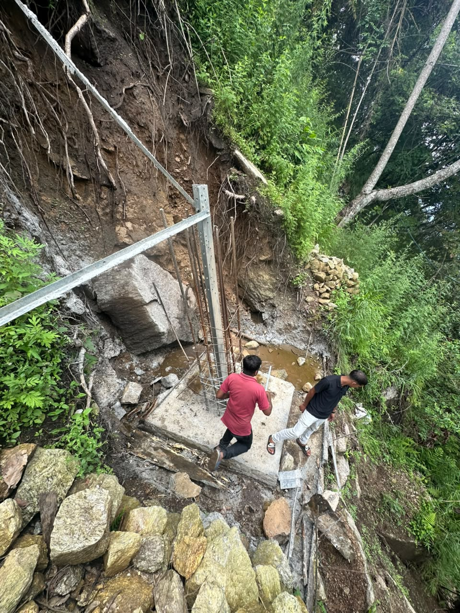

Transmission Line Foundation Supervision
Supervised tower foundation construction for the Mewa-Changhe 132 kV project in challenging terrain, ensuring safety and engineering compliance.
Geology & Civil Engineering
I'm Sujan Paudyal — a geology graduate with over two years of field experience on large infrastructure projects. I bridge earth science and engineering to build sustainable solutions.

B.Sc. Geology (First Division) · Trichandra Multiple Campus, Tribhuvan University
Geology graduate with a passion for sustainable infrastructure and field-based research.
I'm Sujan Paudyal, a geologist and civil engineer based in Nepal. I hold a Bachelor of Science in Geology from Trichandra Multiple Campus, Tribhuvan University (First Division) and have accumulated over two years of practical fieldwork on large-scale infrastructure projects.
My experience spans geological mapping, rock identification, soil testing, and terrain analysis — all integrated with civil engineering challenges. I have supervised tower foundation construction, conducted municipal geotechnical assessments, and contributed to hydroelectric project investigations.
I am highly motivated to pursue a master's degree at the University of Waterloo, focusing on sustainable infrastructure, geotechnical analysis, and applied field studies. I believe in bridging earth science and engineering to build resilient, future-ready communities.

Core coursework: Engineering Geology, Geomorphology, Soil Mechanics. Fieldwork in geological mapping, rock identification, terrain analysis, and site investigations.
Key subjects: Geotechnical Engineering, Road Construction, Physics, Chemistry, Mathematics.
Technical & Vocational Stream, Civil Engineering.
Grateful for the academic mentors who shaped my path into geology and infrastructure research.


Two-plus years turning geological insight into engineering decisions on active infrastructure sites.
Rastriya Prasaran Grid Company Limited (RPGCL) — Mewa-Changhe 132 kV Transmission Line Project, Taplejung
Phung, Nepal · 6 Months OJT
Applied civil and geological knowledge for small-scale hydroelectric project investigations.
3 Months Each
Gained practical experience in municipal civil works and local geotechnical assessments.
A selection of my applied work — from infrastructure supervision to research on flood dynamics.

Supervised tower foundation construction for the Mewa-Changhe 132 kV project in challenging terrain, ensuring safety and engineering compliance.

Applied geological and civil knowledge for small-scale hydroelectric project assessment, including terrain analysis and site suitability.

Published research in GeoWorld Students Journal analyzing flood dynamics, transboundary vulnerabilities, and disaster risk management in a high-mountain region.
Moments from site supervision, surveying, and foundation work across Taplejung's terrain.




Interested in collaboration, research opportunities, or just a conversation? Reach out anytime.
I'm open to graduate research opportunities, consulting, and project collaborations. Let's connect!
Download CVNepali · English (fluent) · Hindi (conversational)